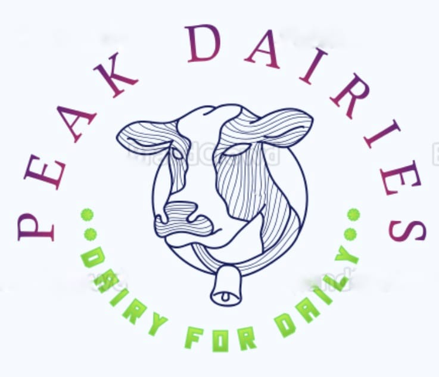

About us:
peak dairies was commissioned in 1974 and is a wholly owned subidiary of the national dairy developmemnt board
(NDDB).It was an initiative under operation flood,the world's biggest dairy development program launched to make
india a milk sufficient nation.over the years,peak dairies has contributed significantly in achieving this objective
through a series of sells milk and milk products including ice creams,panner,ghee,cheese,etc...
vision and mission:
"provide quality food and beverage to consumers at affordable price while ensuring fair returns to the producers"
*Quality of milk is of paramount importance for the company*